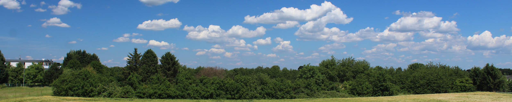
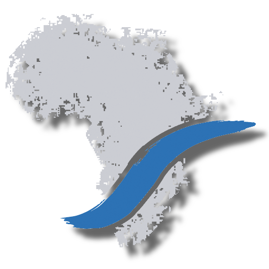
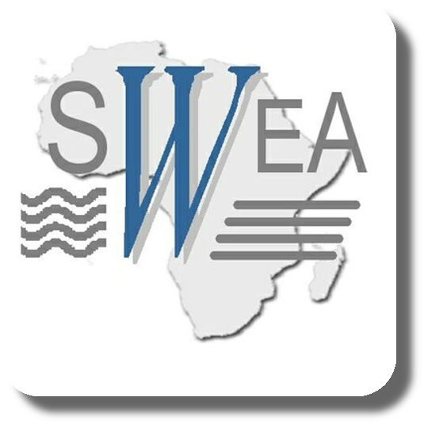
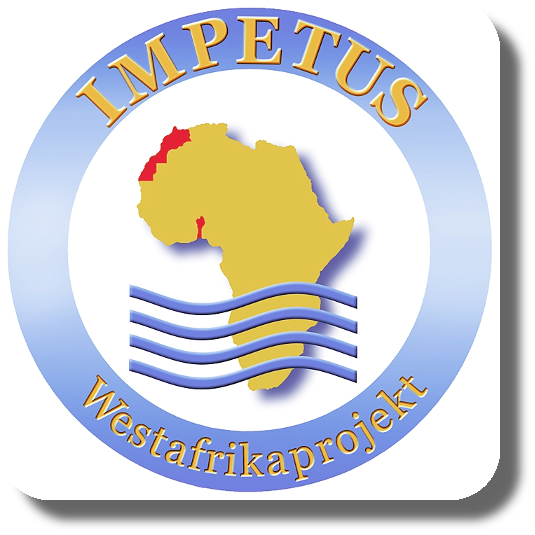

Welcome to my personal site!
This page introduces you to my activities as docent, researcher and developer. Maybe also some of my abilities as artist.
Research Projects
Research and teaching activities are focused on plant diversity and vegetation ecology in Eastern Africa (Kenya, Tanzania, Uganda, Rwanda and Ethiopia).
Current Projects
|  |
Future Rural Africa – Future-making and social-ecological transformation: Evaluating expectations and probabilities in future-making from different perspectives, including social and natural sciences. One of the focus in the consortium is related to the importance of invasive plants on the ecology and management of rangelands in Kenya. Link |
|
|
GlobE-wetlands – reconciling future food production with environmental protection: An interdisciplinary project dealing with the effects of cropping activities on seasonal wetlands. While wetlands in sub-Saharan Africa are important sites for food production, especially in semi-arid regions, cropping activities may also have negative impacts on the integrity of agro-ecosystems. Link |
|
|
ARBONETH – the Ethiopian arboretum network: Research and education project supporting ex-situ conservation of native trees through the establishment of a network among Ethiopian arboretums. Link |
Past Projects
|
|
RCR – resilience, collapse and reorganization in social-ecological systems of African savannas: Social systems and environment interact through coupling and regulation processes in the bio-physical, political-institutional and symbolic-cultural space. Understanding such processes may allow decision makers to adopt strategies suitables for avoiding collapse of socio-ecological systems (SES). Link |
|  |
SWEA – Agricultural use and vulnerability of small wetlands in East Africa: Effects of cropping activities on the integrity and productivity of small wetlands in Kenya and Tanzania. Link |
|  |
IMPETUS – An integrated approach to the efficient management of scarce water resources in West Africa: Sustainable management of water resources in Benin and Morocco. Link |